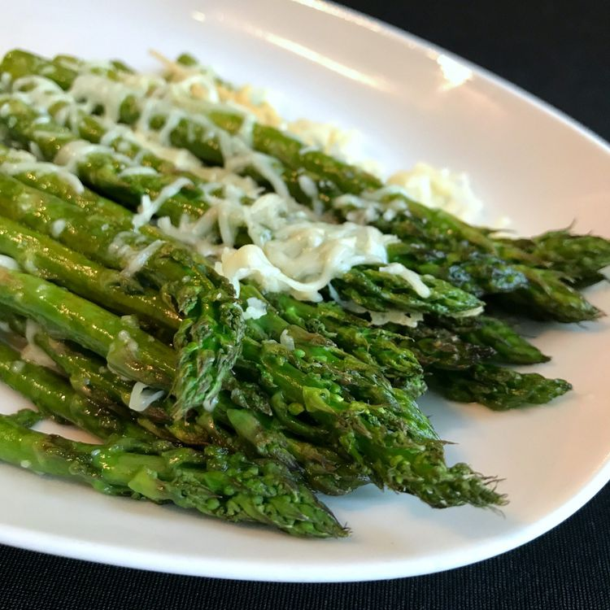

Home
Roasted Asparagus with Parmesan

Ingredients
- Olive oil cooking spray
- 1 pound fresh apsparagus (trimmed)
- 1/4 cup shredded Parmesan cheese
- 1 teaspoon sea salt
- 1/4 teaspoon garlic powder (or to taste)
Steps
- Preheat the over to 400 degrees F.
- Spray the inside of a 9x13 casserole dish with olive oil cooking spray. Place asparagus in dish. Lightly spray spears, too.
- Sprinkle asparagus with Parmesan cheese, sea salt, and garlic powder.
- Roast in preheated oven until fork easily punctures thickest part of stem, about 12 minutes.